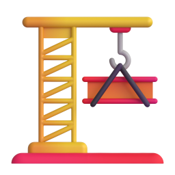

노동사건
노동사건 해결은 물론,
노동사건 해결은 물론,
권리와 감정까지 지켜드립니다
임금 체불·퇴직금 미지급
급여자료 분석 → 정확한 체불금 계산
고용노동부 진정서 작성·제출 지원
근로감독 대응 전략 수립 및 동행 가능
필요 시 민사소송 대응까지 연계
부당해고·징계
해고 사유 분석 → 구체적 대응 전략 수립
노동위원회 구제신청 및 심문회 대응
심문회 당일, 상담 노무사가 직접 변론
복직 후 2차 리스크까지 예방 컨설팅

산업재해(산재)
업무상 재해 진단 및 산재 승인 가능성 분석
신청서류 작성 및 접수 전 과정 지원
불승인 시 이의신청·재심 청구까지 동행
직장 내 괴롭힘·성희롱
피해자 중심 경위 정리 및 증거 수집 지원
진정서 작성, 법적 대응 방향 컨설팅
회사 조치 미흡 시 추가 대응 가능
온유 인사노무컨설팅만의 약속
서류 대행이 아니라,
서류 대행이 아니라,
끝까지 함께하는 대응을 약속합니다
01
사건별 맞춤 전략 수립
단순 서류 대행이 아닌, 사건에 맞춘 맞춤형 대응 전략을 제시합니다.
02
상담부터 끝까지 직접 진행
초동 상담 노무사가 사건 종료까지 직접 책임지고 진행합니다.
03
법적 대응과 감정 케어
법적 절차 대응은 물론, 심리적 부담까지 함께 살핍니다.
04
노동청·공단 등 출석 및 변론
필요 시 직접 출석하여 변론하고, 사건 종료 후 후속 리스크까지 관리합니다.
상담 신청
(전화, 카톡, 홈페이지) → 사건 분석 및
맞춤형 전략 제시 → 위임 후, 담당 노무사가
처음부터 끝까지 직접 대응
(전화, 카톡, 홈페이지) → 사건 분석 및
맞춤형 전략 제시 → 위임 후, 담당 노무사가
처음부터 끝까지 직접 대응
자주 묻는 질문
노동사건, 이것이 궁금해요
Q1. 상담은 무료인가요?
소정의 상담료가 발생하며 사건 수임 시 상담료는 공제됩니다.
Q2. 사건 담당자는 누구인가요?
처음 상담한 공인노무사가 끝까지 직접 맡습니다.
Q3. 사건 처리 범위는 어디까지인가요?
자료 분석, 서면 작성, 기관 대응, 심문회 대리 출석, 결과 이행까지 지원합니다.
Q4. 결과에 불만족하면 추가 대응도 가능한가요?
네, 재심사청구, 추가 소송 등 연속 대응이 가능합니다.
지금 시작하기
혼자 고민하지 마세요.
혼자 고민하지 마세요.
온유가 함께 답을 찾겠습니다.
연락처를 남겨주시면 24시간 이내에 회신드립니다.
노동사건 상담 신청